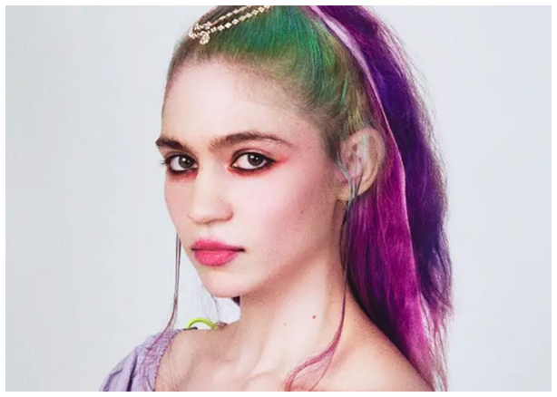

The Canadian singer speaks out against sexual violences she went through during her last tour. Grimes wants to change mentalities and bring change in a musical industry eroded by sexism.
Grimes speaks out against sexism on tumblr.
The musician does not want to accept sexism in order to have a career. She’s defending her artistic identity in her tumblr post. Grimes does not stand being treated as an object. She speaks out against sexual violences she had to face while she was touring her last album (Miss Anthropocene, 2020). Grimes points out that she does not exist only for the satisfaction of the public and that it is extremely disrespectful to be treated as an object of divertissement by the media and her fans.
Grimes also speaks about the fact that she’s being constantly put down by her males coworkers who make inappropriate comments. For example they propose to help her as if she wasn’t able to do anything by herself. For Grimes it is just as if they implied that because she’s a woman she can’t do her work. She sees this as a huge lack of respect for women and thinks it is very unprofessional from people who work in the music industry. She clarified that this strictly applies to women as she never noticed this happening with men.
“I hate being treated as “basic” because I like pop music and fashion. As If liking any of these things made me less of a human being”
Grimes is extremely disappointed that her feminist speech is being perceive as “anti-male”. The pop artist does not like the fact that her desire for equality is being perceived as hatred for men. Grimes would prefer her speech to be seen as a desire for respect. She also mentions her four brothers, her father and her male friends, with whom she maintains a very close relationship. Moreover, Grimes clarified that she does not believe all men are sexist or that they behave in the same manner as the one she spoke about previously.
Even though she is often qualified as “cute” or as other similar terms she does not agree with those designations regardless of the positive aspect. Grimes expresses her disagreement by quoting the definitions of those terms and emphasizing the negative aspects. The artist does not permit her fans to use those words to qualify her just because it is common.
“It’s not because it's recurrent that it has to be accepted”
To sum up, the artist expresses love for her fans and everyone supporting her vision. She also says that she loves her job and that she would change it for nothing. Grimes precise that she realized this interview in order to be officially involved with the feminist movement as an artist. She considers herself as an accomplished artist and she would like to be respected as such.
Grimes entices us to go listen to her albums Visions (2012) and Miss Anthropocene (2020) in order to get a glimpse of her musical universe. Especially her song entitled “Kill V. Maim” which evokes sexism as she already experienced it.